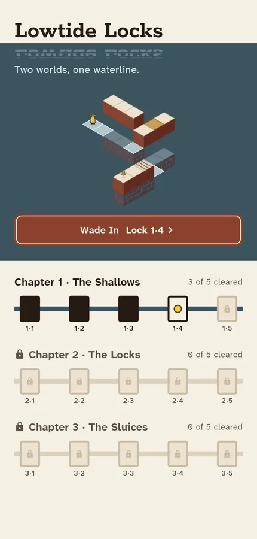
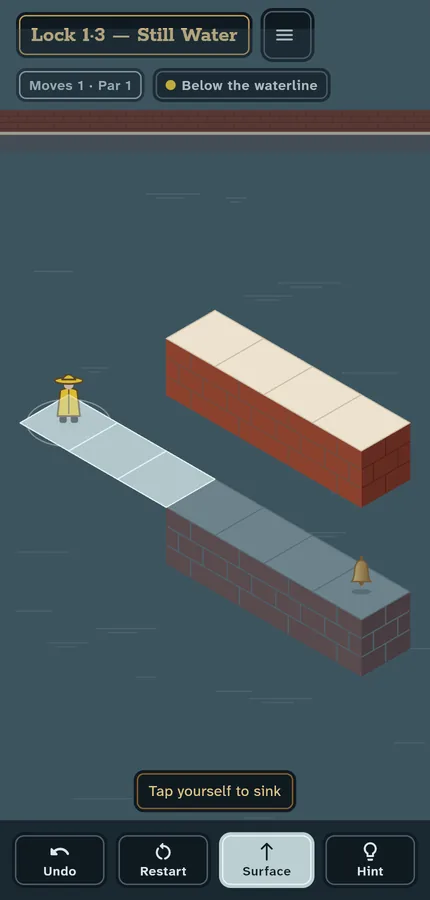
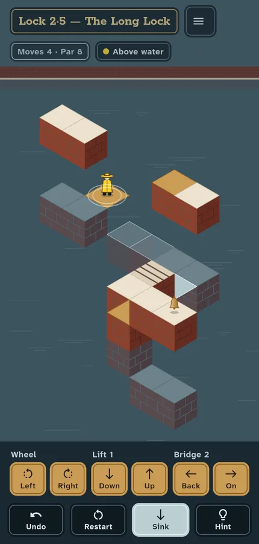
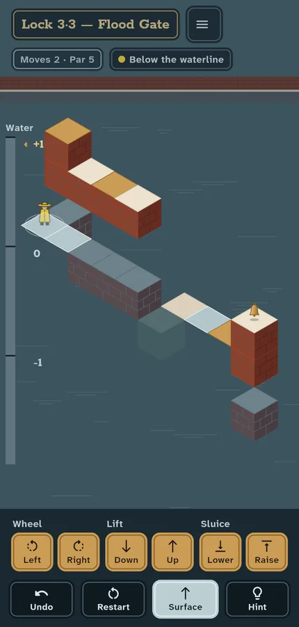

The Shallows
Tap to walk. Turn brass wheels until two paths meet where your eye says they do. At a still stone, level with the water, tap the keeper to sink below the waterline.
Two worlds, one waterline.
A lock-keeper in a yellow oilskin works the brick sluices of a tidal estuary. The canal is still enough to be a mirror, and the image below the waterline is a second set of paths. Turn the wheels, sink through the surface at a still stone, and walk under the bridges to reach the bell.

Each chapter adds one mechanism. A lock takes two to five minutes, and each has a par: the fewest moves that open it.

Tap to walk. Turn brass wheels until two paths meet where your eye says they do. At a still stone, level with the water, tap the keeper to sink below the waterline.

Lifts rise and fall with the keeper aboard, bridges slide on rails, and mirror stones exist only below the waterline.

Raise or lower the tide. The mirror moves with it: stones go under, new joins appear below the waterline, and the way to the bell changes.
One small game, made to be finished.